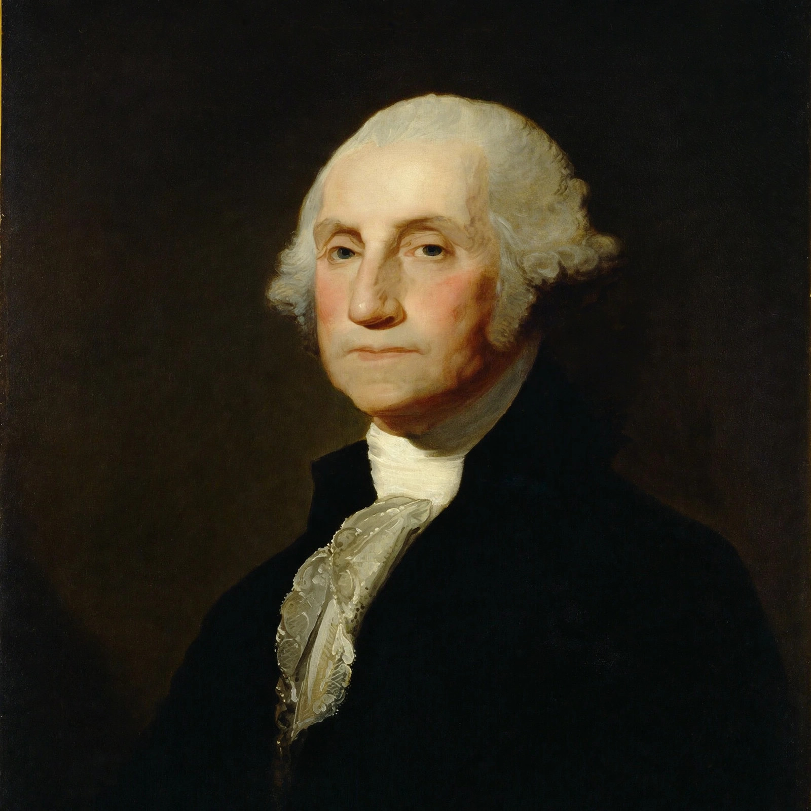

Non-interventionism or non-intervention is a political philosophy or national policy of avoiding political or military intervention in the internal affairs of other countries and, in its broader form, avoiding entangling alliances and overseas commitments beyond what direct self-defence requires. It is distinct from isolationism: non-interventionists favour diplomacy, trade and cultural exchange with the world while opposing military involvement in foreign conflicts.
The principle of non-intervention became a cornerstone of international order with the Peace of Westphalia (1648), which grounded state sovereignty. In the United States, George Washington's Farewell Address (1796) warned against permanent alliances, and Thomas Jefferson's first inaugural pledged "peace, commerce, and honest friendship with all nations — entangling alliances with none". The Monroe Doctrine (1823) paired non-interference in Europe with a warning against European interference in the Americas. In the 1930s, disillusionment after the First World War made non-intervention the dominant American mood, expressed in the Neutrality Acts and, at its peak, the America First Committee. The attack on Pearl Harbor ended that era; post-1945 American foreign policy was broadly interventionist, though non-interventionism survived as a minority tradition and revived in debates after the Iraq and Afghanistan wars.
Non-intervention is also a legal principle: the UN Charter prohibits intervention in matters essentially within the domestic jurisdiction of any state (Article 2(7)), and the International Court of Justice has treated the principle as part of customary international law. Disputes persist over its exceptions — humanitarian intervention, invitations from a recognised government, and Security Council authorisation chief among them.
Supporters argue that intervention usually produces unintended consequences, costs blood and money disproportionate to any interest at stake, and breeds resentment; critics reply that passivity can permit aggression and atrocity, and that in an interdependent world abstention is itself a choice with consequences.